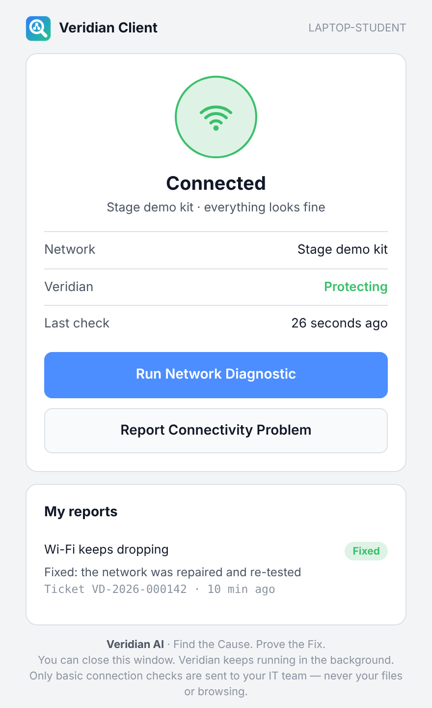
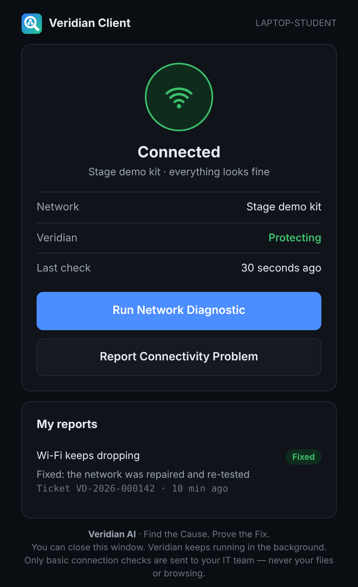

Veridian quietly checks your office network in the background. When something breaks, it finds the real cause with evidence, and you can report a problem to your IT team in one click.


You need the invite code from your IT team. It starts with VRD1- and tells Veridian which office network to look after.
Click Download for Windows and open VeridianSetup.exe. If Windows shows "Windows protected your PC", click More info → Run anyway.
Click Next through the installer and paste the code from your IT team when it asks. Allow the administrator prompt: Veridian runs as a small background service.
The Veridian icon appears near the clock. A green dot means your connection is fine. Click it any time to run a check or report a problem.
It measures the network, not you. Only basic connection checks are sent to your IT team.
Answers to the questions people ask most.
That is Windows SmartScreen. The installer is not yet signed with a paid code-signing certificate, so Windows does not know it. Click More info, then Run anyway.
Npcap is a free network driver (the same one Wireshark uses). Veridian needs it for one test: whether new devices can get a network address. Everything else works without it. Get it from npcap.com and keep the default options.
Check that you pasted the whole invite code, and that your laptop is on the office network (or can reach your IT team's Veridian server). Then run VeridianSetup.exe again. If it still fails, ask your IT team for a new code.
Settings → Apps → Installed apps → Veridian Client → Uninstall. This removes the app, the background service and its settings.
Open your Veridian dashboard, choose a site, click Add a device and send the user this page and the invite code. Each code adds devices to one site only; change the site's enrolment key to revoke it.
Veridian combines these client checks with a collector inside the network, plans the fewest tests that settle the cause, and changes nothing until an engineer approves a sandbox-checked fix, which it then re-tests.